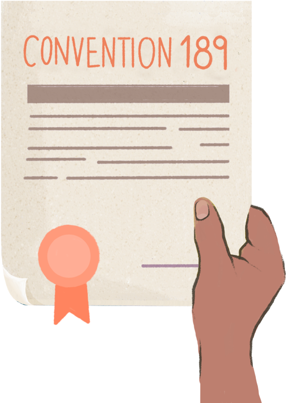

arrow_downward
What is a Convention?
International labor standards are presented within Conventions, which impose obligations on the countries that ratify them with the aim of improving employment conditions throughout the world.
arrow_downward
What is the ratification of a Convention?
Ratification is the commitment that a country assumes to take the necessary measures to make the provisions of the agreement effective, both in the creation of laws and in their compliance.
arrow_downward
What is the Belém do Pará Convention?
Adopted on June 9, 1994, this convention is the first international treaty that specifically addressed violence against women and enshrined the right of women to a life free from violence in all spheres.

Why is Convention 189 important?
Although several countries had already made legislative modifications aimed at equalizing domestic work with other types of employment before the approval of Convention 189, the Convention specified the standards.